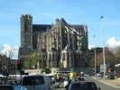
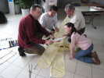
Coulaines s'est jumelée avec Kitty Hawk (1er vol des frères Wright) et ils ont échangé des cerfs-volants... Plus qu'à le monter !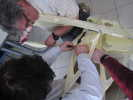
Le montage s'effectue en coopération, chacun montant son petit bout !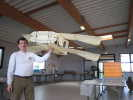
Et voilà, c'est terminé. Il a l'air un peu mou des ailes, en statique... Va-t-on oser le lancer dans les azurs ?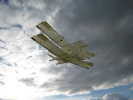
Hé bien il vole ! Il vole même très bien (les poches, sans doute !). Pourtant, le vent est plutôt au dessus des limites indiquées...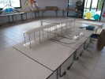
Une maquette du Flyer a aussi été prêtée à Coulaines... En fait, c'est une maquette historique, qui a été réalisée pour des essais en soufflerie. Elle est robuste, l'armature est... en fer plein !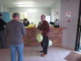
La mise en place n'est pas finie, loin de là ! Jean-Claude gonfle des ballons qui seront transformés par quelques ficelles et une nacelle en montgolfières décoratives au plafond.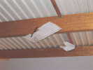
J'ai aussi monté et pendu la Demoiselle de Santos-Dumont appartenant à Jean-Claude. Pas un très bon cerf-volant, mais un bon objet de décoration...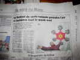
Le journal annonce le festival du week-end, avec un cerf-volant de plumes de Joël, de l'année dernière, évidemment....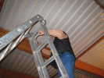
Pour faire de l'aérophoto et immortaliser les participants qui deviennent de plus en plus nombreux (déjà 26 vendredi soir !), Jean-Pierre travaille sur une grande échelle !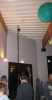
Jean-Claude, lui, utilise son mat dont il a amélioré le trépied pour plus de stabilité et de transportabilité... L'appareil est toujours hissé comme un drapeau avec une drisse, sur un petit chariot coulissant.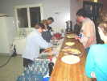
Enfin, le pot d'accueil. Généreux comme d'habitude, toutes ces dames ont apporté leur chef d'oeuvre, les collerettes de copeaux de fromage tourné de Marie-Hélène, les bugnes de Bernadette, des cakes salés ou sucrés de Josette et d'autres...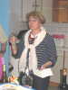
C'est un "gros" anniversaire pour Marie-Hélène. Elle ouvre ses cadeaux et tout le monde participe à sa joie (?).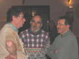
Et on discute intarissablement, les deux François et Gaby ne sont pas les derniers de ce point de vue... On refait les fêtes du passé, on discute du Lucane (un incident informatique a retardé sa parution, mais ça ne va pas tarder maintenant...), on parle cerf-volant et cervolistes, quoi...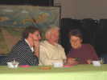
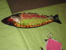
Et on passe à table, non sans avoir admiré ce magnifique saumon préparé et décoré en l'honneur du week-end (et plus tard découpé, c'est presque dommage...) de main de maître !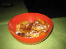
Au dessert, entre autres, des bugnes, il y en a des tonnes, on n'arrive pas à en venir à bout...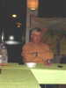
Ensuite, eh bien la route a été longue, le repas trop bon, etc., une petite pause s'impose !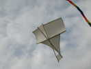
Après une bonne nuit et les croissants apportés aux camping-cars, les cervolistes ont le tonus. Il fait à peu près beau en ce samedi matin. Philippe Burger a réalisé un F.OWENS, bois et coton, un cerf-volant en ciseau simple, élégant, et très stable !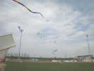
Il finit par y avoir pas mal de monde en l'air, dans un ciel où le bleu domine encore ! Le vent était déjà solide, et assez turbulent. Ma grue n'a pas pu voler de manière stable, contrairement aux précédentes prestations... Il va falloir remettre ça sur le métier!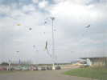
Il finit même par y avoir beaucoup de monde, même le team de révos de Vierzon, et un pilotable deux-lignes, au milieu de tous ces monofils.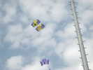
On voit aussi un beau Calomil coloré à étoile (à Bruno Claes ?) assez stable même à altitude basse, et un Parasled à poches qui doit tirer d'enfer !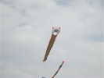
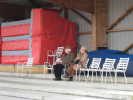
L'après-midi, le temps se gâte progressivement. Les quelques spectateurs courageux profitent des sièges de la tribune, à l'abri de la pluie, et un peu du vent...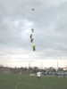
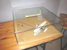
On rentre dans la salle, axée sur le vol du Flyer. Un diorama représente le premier vol motorisé (enfin, pas autonome comme Ader, mais avec une catapulte...) de la machine des frères Wright...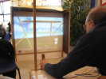
Pôle d'attraction, un simulateur de vol du Flyer, qui permet de s'initier à ce pilotage un peu spécial : on pilote la profondeur de la main gauche, et l'inclinaison... avec les hanches ! Je fais un essai, c'est très sensible, mais j'arrive à m'en tirer.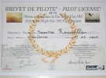
J'ai gagné mon brevet de pilote de Flyer, je suis content ! Alors, je fais un peu moniteur pour les autres...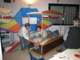
Jean-Marc s'y colle aussi, mais pour un novice complet, ce n'est pas évident !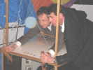
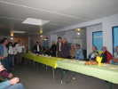
Fin des vols, on lâche le simulateur pour un pot organisé dans la salle voisine, pas bien gaie en elle-même, mais on crée l'ambiance !...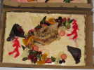
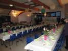
Retour dans la grande salle où nous attend un incroyable spectacle ! Les tables sont dressées avec un luxe d'attentions émouvant : nappes, bouquets de vraies roses, serviettes pliées avec goût, petit cadeau pour chacun...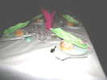
Chacun a son petit cadeau (comme tous les ans, quelle constance dans l'effort !), soit un Flyer (micro), soit un tableau (micro) représentant son vol !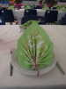
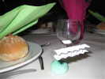
Le petit avion est une merveille en soi : miniaturisation poussée, structure formée et surfaces collées : un détail : il y a DEUX épaisseurs de revêtement, une de chaque côté des surfaces pour masquer l'armature...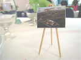
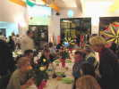
Le repas est succulent, et pendant ce temps, pour rester dans l'ambiance, on projette les photos prises dans la journée !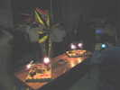
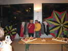
On force Josette à faire un petit discours, bien qu'elle commence à fatiguer un peu, après des journées (les nuits ?) passées à préparer et le coup de feu final...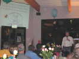
Pour finir, le Président du Comité du Centenaire du vol de Wright nous fait une conférence bien documentée... et orientée...(Ader a-t-il volé, c'est peu probable. Alors qu'on est sûr des vols des Wright, ils les ont inscrits dans leur carnet !). Mais c'est très intéressant, moins sur la fin où il nous décrit la maison des Wright, etc...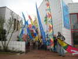
Dimanche matin, déambulation avec bannières prévue dans Coulaines. Nous sommes descendus en voiture. On défile un peu, mais il tombe des cordes, on abrège le parcours et on traîne un peu, on se réfugie dans un coin de mur !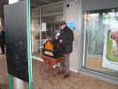
Heureusement, nous avons de la musique, un fana de l'orgue de barbarie nous a accompagnés ! Il paraît qu'il en a plusieurs, celui-là est un petit, monté sur grandes roues pour la déambulation. Alors on chante, "Le Dénicheur" et autres. Il a même la Marseillaise !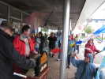
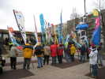
Ca y est, le maire est là. Un coup de Marseillaise (à l'orgue), et il descend nous serrer la main...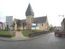
Et voilà, on repart, un peu mouillés ! On passe près de la curieuse église de Coulaines, avec son clocher mastoc...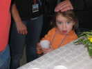
Retour au stade du Val-de Monnet, on traîne encore un peu, et c'est l'heure... d'un petit pot pour préparer le déjeuner. Je ne vais pas toujours vous montrer des photos de buveurs ! Voici Lorane, qui est de tous les festivals, toujours aimable et un peu surprise par le photographe...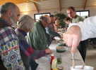
On passe au déjeuner, dommage, ce sera le seul moment de la journée où il fera beau ! On goûte quand même le buffet de hors-d'oeuvres (rillettes du Mans, bien sûr) avec plaisir, il faut bien emmagasiner des calories, autant manger de bonnes choses...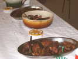
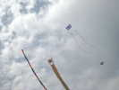
Dimanche après-midi, euh, moyen. Beaucoup de vent, de la pluie, mais il y a quand même pas mal de courageux en l'air. Moi, ma grue ne veut pas marcher droit, alors je casse un Albatros (deux fois ce week-end...) et j'arrête, ça m'a démoralisé, je suis parti tôt...